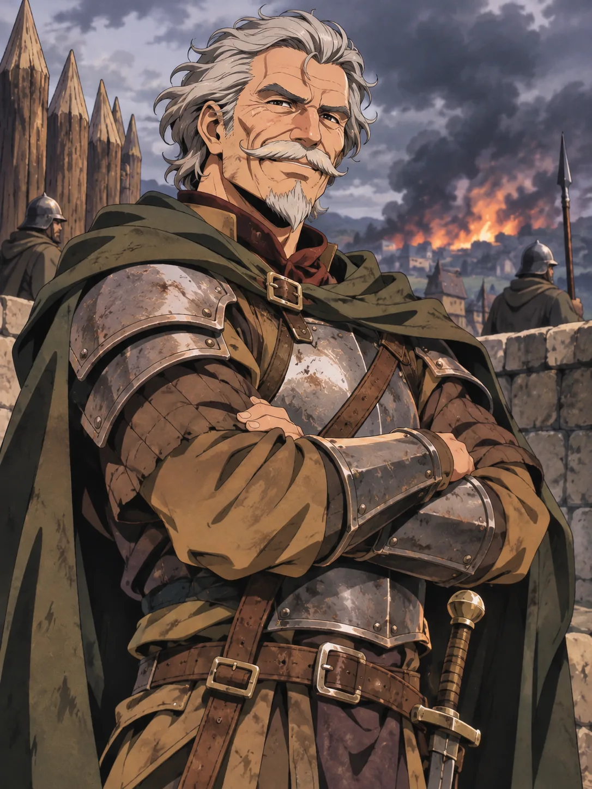
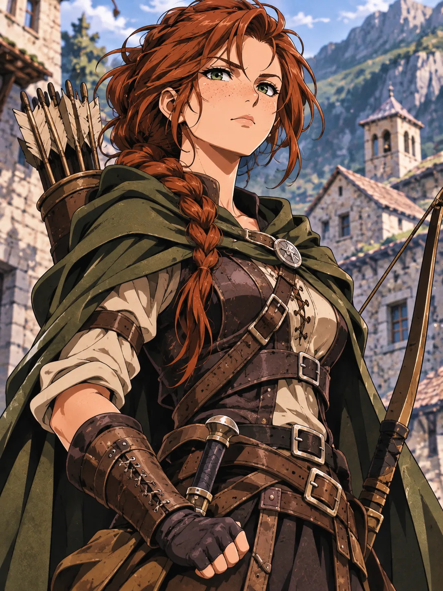
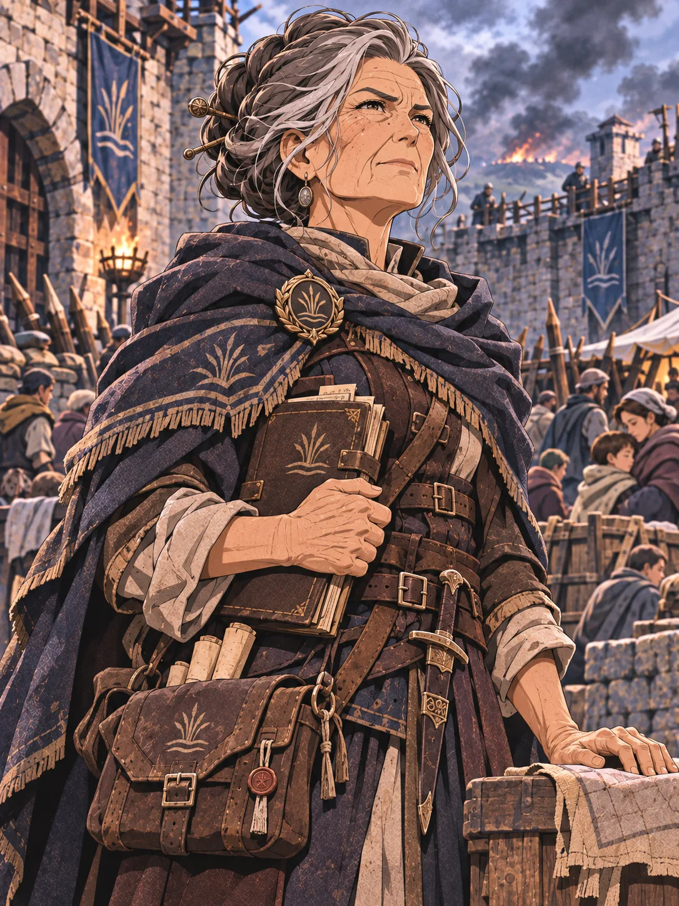
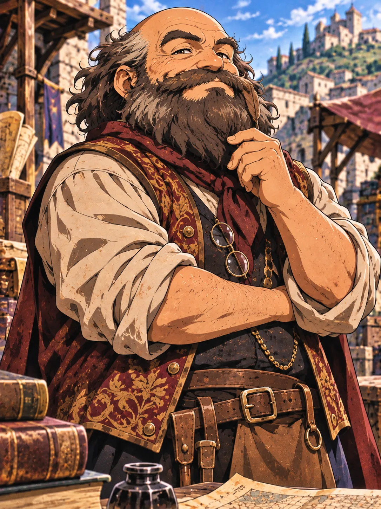
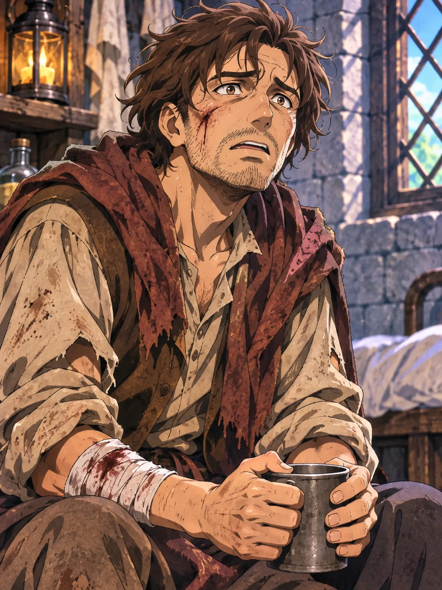
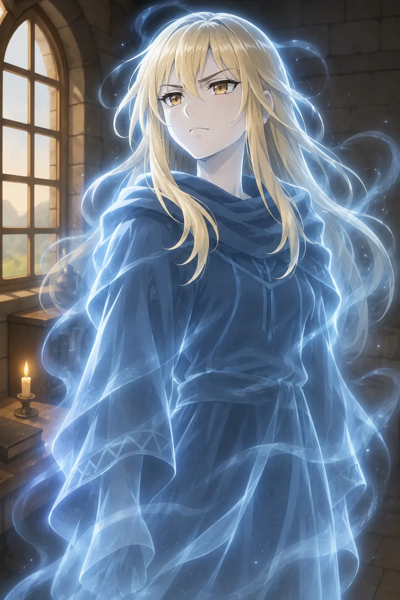
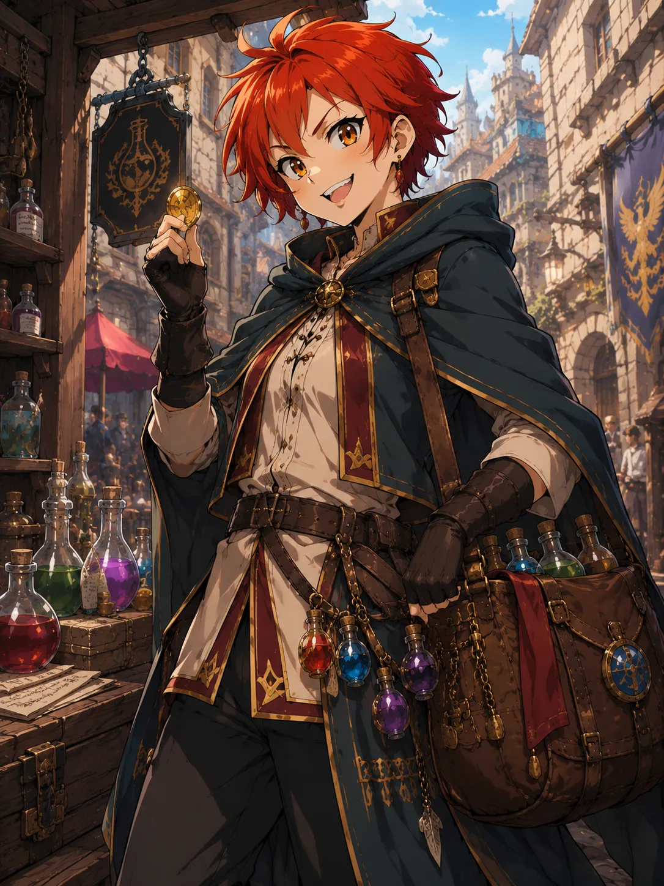
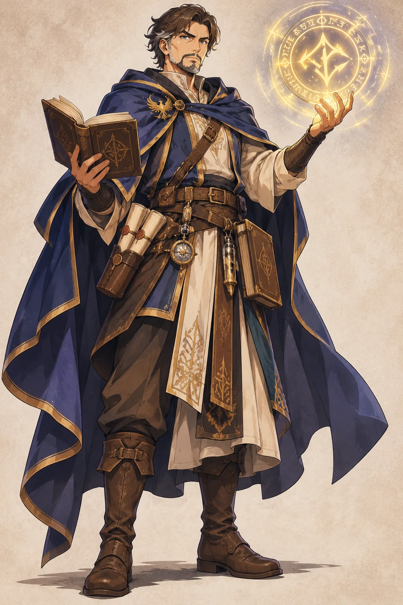

Gruppo 1 · Avventura 1
L’Ombra su Watermire
Testo di lavoro per il Master · Ellan 3.0
Introduzione per il Master
Questa avventura apre la campagna e riunisce per la prima volta i personaggi, Aelissa e Zoey. Tutti si risvegliano a Watermire senza alcun ricordo di come siano arrivati lì e con una moneta d’oricalco addosso, mentre una città ormai spezzata resiste all’assedio di non morti incapaci di restare distrutti.
L’Ombra su Watermire è un’avventura fondativa e volutamente ampia. Il suo obiettivo non è soltanto condurre i personaggi alla salvezza, ma dare loro il tempo di condividere pericoli, decisioni, fallimenti, perdite e responsabilità. Quando lasceranno Watermire dovranno avere ragioni concrete per fidarsi gli uni degli altri e continuare il viaggio insieme. Zoey contribuirà a creare il legame emotivo del gruppo; Aelissa diventerà invece una presenza rassicurante, preziosa e ancora difficile da comprendere.
Elementi centrali dell’avventura
* Situazione iniziale: i personaggi si risvegliano senza memoria recente in una città assediata dai non morti.
* Mistero iniziale: ognuno trova con sé una moneta d’oricalco identica, con un uccello su una faccia e il profilo di una giovane donna sull’altra.
* Minaccia principale: i non morti si rigenerano pochi momenti dopo essere stati abbattuti.
* Antagonista nascosta: Iria Varn, vice del capo delle guardie e assistente dell’Agente Eterno responsabile della distruzione di Watermire.
* Obiettivo: scoprire l’origine della corruzione, distruggere il congegno necromantico e permettere a Geffroi di compiere il rituale che salverà i superstiti.
La conduzione
La prima parte dell’avventura deve trasmettere disorientamento e urgenza. Una volta raggiunta la cittadella, il ritmo può rallentare: i personaggi conoscono i superstiti, contribuiscono alla difesa e scoprono che Watermire è ancora abitata da persone capaci di coraggio, generosità e paura. Queste relazioni danno peso alle successive uscite oltre le mura e rendono più dolorosa la rivelazione su Iria Varn.
Non è necessario presentare tutte le scene o tutti gli incarichi proposti. Il Master può scegliere quelli più adatti al gruppo, alternando momenti di tensione, esplorazione e vita nella cittadella. È però importante mostrare i principali difensori attraverso azioni concrete prima della spedizione nel Fossoscuro.
La rigenerazione dei non morti
Ogni non morto incontrato a Watermire torna a muoversi pochi momenti dopo la sua apparente distruzione. Ferite, mutilazioni, fuoco e magia possono abbatterlo o rallentarlo, ma non impedirgli di ricomporsi.
Questa regola deve emergere fin dal primo scontro. I personaggi devono comprendere rapidamente che continuare a combattere serve soltanto a guadagnare tempo: finché il congegno necromantico rimane attivo, nessun non morto può essere eliminato definitivamente. Alcune protezioni possono tenerli lontani o impedire loro di attraversare una soglia, ma non annullano la rigenerazione.
La rigenerazione termina soltanto con la distruzione del congegno custodito nel Fossoscuro. Da quel momento i non morti già abbattuti cessano di ricomporsi e quelli ancora attivi possono essere distrutti definitivamente.
Antefatto – Watermire, la città spezzata
Posizione e origini
Watermire è una città di frontiera fondata pochi decenni fa, durante l’espansione dei Reami del Sud verso occidente. Dopo la nascita di Westmire, inizialmente chiamata per errore Impervia e destinata a diventare il fulcro di un nuovo regno, altre ondate di coloni si spinsero verso sud. Le carovane partivano da Cima di Rocca, nell’Horgon, raggiungevano Westmire e da lì proseguivano verso una nuova terra promessa.
L’insediamento crebbe rapidamente fino a diventare una città di medie dimensioni. Canali e ponti ne attraversavano i quartieri e scavalcavano una grande fenditura naturale, profonda e poco esplorata, conosciuta come Fossoscuro. Nelle sue caverne scorrevano acque sotterranee; fin dai primi scavi circolavano storie su rovine appartenute a un popolo dimenticato. Gli abitanti le attribuivano agli antichi elfi, ma si trattava in realtà di vestigia ellantil.
La spedizione di Alphonse
Anni dopo la fondazione, una spedizione guidata da Alphonse discese nel Fossoscuro. Nel cuore delle rovine gli esploratori trovarono una polla di acqua purissima, al centro della quale riposava un disco ellantil d’oricalco. Nota per il Master: i dischi d’oricalco erano impiegati dagli Ellantil come accumulatori di energia magica, una sorta di batterie destinate ad alimentare i loro macchinari. Il disco ritrovato è dunque un componente energetico dell’antica tecnologia Ellantil, non un semplice oggetto ornamentale. Il macchinario che alimentava un tempo è ormai distrutto: la sua identità non è importante per la vicenda e può restare ignota.
Fu allora che intervenne un Agente Eterno, la cui identità non deve ancora essere rivelata. L’Agente uccise i membri della spedizione, sottrasse il disco e collocò al suo posto un congegno necromantico, destinato a corrompere la polla e cancellare ogni traccia del ritrovamento.
Alphonse sopravvisse soltanto perché si era momentaneamente allontanato dagli altri. Udì ciò che stava accadendo, fuggì terrorizzato, cadde e batté violentemente la testa. Da allora la sua mente non è più lucida: conserva frammenti della verità, ma li esprime attraverso ricordi sconnessi e parole deliranti.
La caduta di Watermire
La corruzione si diffuse dal Fossoscuro alle acque sotterranee e al Mana della regione. All’inizio vi furono morti sospette, malattie inspiegabili e cadaveri scomparsi dalle tombe. Poi i defunti tornarono a camminare e ogni creatura non morta abbattuta cominciò a ricomporsi.
Quando l’ondata raggiunse apertamente la città, Watermire fu travolta. Gran parte della popolazione morì o venne trasformata; interi quartieri furono abbandonati nel giro di poche ore. Soltanto la cittadella centrale riuscì a resistere grazie ai difensori guidati dalla Kalane Isolde Bararac e ai glifi innalzati dal magister Geffroi.
Per gli Eterni, la distruzione della città non rappresenta un atto di crudeltà, ma il prezzo necessario per impedire che il ritrovamento del disco venga conosciuto. Watermire e tutti i suoi abitanti sono testimoni da eliminare.
Iria Varn
Iria Varn è da tempo infiltrata tra le guardie cittadine. Divenuta vice dell’anziano comandante Davy Kitt, è conosciuta e rispettata dagli abitanti per il coraggio, la disciplina e l’abilità con l’arco. Durante l’assedio continua a difendere sinceramente chi le sta accanto, perché mantenere la copertura e portare a termine il proprio compito non le impongono di essere inutilmente crudele.
In realtà Iria Varn è l’assistente dell’Agente Eterno. È rimasta a Watermire per sorvegliare il congegno, impedirne la distruzione e assicurarsi che la città non lasci testimoni. Non agisce per sadismo e non considera le proprie azioni malvagie: condivide serenamente la convinzione degli Eterni che il sacrificio sia necessario, razionale e moralmente giusto.
Non teme neppure di morire. Crede che il tatuaggio degli Eterni preserverà la sua anima e le permetterà di tornare.
Watermire all’inizio dell’avventura
* Città esterna: i quartieri oltre la cittadella sono devastati, quasi deserti e infestati da non morti rigeneranti. Porte spalancate, tavole ancora apparecchiate e oggetti abbandonati lungo le strade testimoniano una fuga improvvisa.
* Cittadella centrale: gli ultimi superstiti resistono sotto la guida della Kalane Isolde Bararac. Le guardie di Davy Kitt e Iria Varn difendono le palizzate, mentre i glifi di Geffroi tengono temporaneamente lontane le orde.
* Fossoscuro: nelle sue profondità si trova la polla contaminata. Il congegno necromantico che alimenta la corruzione è ancora attivo e Iria Varn farà tutto ciò che è necessario per proteggerlo.
Verità riservate al Master
* Il reperto scoperto dalla spedizione era un disco ellantil d’oricalco: una batteria magica usata dagli Ellantil per fornire energia ai loro macchinari. L’Agente Eterno lo ha sottratto e lo mostrerà ai Reggenti nella scena dopo i titoli, alla quale i giocatori assisteranno ma che i personaggi non conosceranno. Segreto per il Master: gli Eterni stanno radunando questi dischi per alimentare Zarvator, un enorme golem pilotabile. Questo scopo non deve essere svelato ai giocatori in questa avventura.
* Il congegno collocato nella polla è la causa della corruzione e della rigenerazione. Finché rimane attivo, i non morti di Watermire non possono essere distrutti definitivamente.
* Iria Varn è una traditrice, ma il coraggio e l’aiuto che mostra durante l’assedio non sono necessariamente una finzione. Ai suoi occhi salvare alcune vite nell’immediato e condannare la città per proteggere il progetto degli Eterni non sono azioni incompatibili.
* Alphonse è l’unico testimone sopravvissuto alla spedizione. Può offrire indizi autentici, ma non è in grado di ricostruire o raccontare con ordine ciò che ha visto.
Scena di Apertura – Il Risveglio e la Fuga
La sera precedente
La sera prima dell’inizio dell’avventura, nessuno dei protagonisti si trovava a Watermire. Aelissa era nei pressi di Crossbolt, a Yatandra, e si era accampata in una radura. Zoey si trovava a Lunare, dove aveva trascorso la serata suonando in una locanda. Ogni personaggio si era addormentato nel luogo stabilito dal giocatore durante la creazione o la presentazione del personaggio. Non è necessario che questi luoghi abbiano alcun legame tra loro: il risveglio comune a Watermire è inspiegabile e costituisce il primo mistero della campagna.
Nota riservata al Master — il trasferimento: è stata Nyarell a condurre a Watermire tutti i personaggi giocanti, Aelissa e Zoey. La causa è ignota ai protagonisti e non deve essere svelata nell’avventura. La posizione di Nyarell: «Io ho solo spostato delle persone, non ho cambiato la storia…». Lei ritiene di non aver infranto il giuramento di neutralità perché non ha deciso le azioni successive dei protagonisti. È la sua giustificazione personale, volutamente ambigua, non una certezza imparziale. Aelissa e Zoey: entrambe sono state trasportate a Watermire nelle stesse condizioni dei personaggi giocanti. Non conoscono la causa del trasferimento, non hanno scelto di trovarsi qui e non ricordano alcun viaggio. Anche per loro la moneta d’oricalco e il risveglio sono un mistero autentico. Aelissa mantiene i propri segreti personali e le sue conoscenze Ellantil, ma questi non le forniscono una spiegazione dell’accaduto.
Nota riservata al Master — le monete: sono un vezzo di Nyarell, una firma lasciata ai viaggiatori, non il mezzo usato per trasportarli. Sono forgiate in oricalco, metallo noto agli Ellantil, i quali però non hanno mai coniato monete. Una faccia reca un uccello, l’altra il profilo di Nyarell, che agli occhi di chi lo osserva è soltanto quello di una ragazza: nessuno conosce il suo volto e non può riconoscerla dall’effigie. La moneta non va confusa con i dischi Ellantil, che sono accumulatori magici.
Presentazione dei personaggi
Dopo aver descritto l’ambiente del risveglio, interrompi brevemente la narrazione e concedi a ogni giocatore il tempo di descrivere l’aspetto del proprio personaggio nel momento in cui riprende conoscenza: abiti, equipaggiamento visibile, tratti riconoscibili, condizioni e primo atteggiamento verso gli sconosciuti che lo circondano. Solo dopo che tutti si sono presentati fai rialzare Aelissa e Zoey e prosegui con il testo seguente.
Un silenzio innaturale. Non quello della quiete, ma quello di un respiro trattenuto prima di un grido.
Polvere sospesa nell’aria. La luce filtra obliqua tra travi spezzate e muri crollati. Vi risvegliate insieme, stesi su un pavimento coperto di cocci e macchie di sangue secco.
La testa pesa, i muscoli sono tesi come dopo giorni di marcia… eppure ciascuno di voi ricorda chiaramente dove si era addormentato la sera precedente. Nessuno ricorda il viaggio, il rapimento o la magia che possa avervi condotti qui.
Accanto a voi si rialza una giovane donna dai capelli biondi raccolti in una lunga treccia. Raddrizza i grandi occhiali storti sul volto e si presenta con un sorriso gentile, quasi troppo sereno per quel luogo: «Mi chiamo Aelissa. State tutti bene?» Tra le dita stringe una piccola moneta dorata dai bagliori caldi.
Poco più in là, un’altra ragazza si mette seduta, si guarda intorno e si tasta le tasche con crescente preoccupazione. «Zoey. E prima che qualcuno lo chieda: no, non ricordo come siamo arrivati qui. Ma ricordo perfettamente che avevo dei dolci.» Il suo tono è leggero, come se la loro situazione fosse soltanto un contrattempo.
Uno dopo l’altro, trovate addosso la stessa moneta posseduta da Aelissa. Su una faccia è raffigurato un uccello; sull’altra il profilo di una ragazza sconosciuta. Il metallo è raro, antico e quasi impossibile da reperire nel mondo moderno. I fermacapelli e i piccoli sonagli fra le trecce di Aelissa restituiscono un riflesso sorprendentemente simile.
Prima che possiate fare domande, un boato scuote il piano di sotto. Urla. L’odore acre della morte. Ombre che si muovono.
La prima minaccia
* Dalle stanze inferiori irrompono alcuni morti rianimati, accompagnati da un ghoul più rapido e feroce. Il Master può adattarne il numero alla capacità del gruppo, senza trasformare la scena in una battaglia prolungata.
- Ambiente: casa in rovina, travi instabili e poca luce.
* Pochi momenti dopo essere stati abbattuti, i non morti si rialzano completamente rigenerati. Nessun mezzo impiegato dai personaggi, compresi il fuoco e la magia, riesce a impedirlo.
🔒 Indicazioni per il Master
La scena non deve concludersi con una vittoria, ma con la consapevolezza che restare significa essere sopraffatti. Un personaggio dotato di conoscenze magiche o religiose può comprendere, con un test di difficoltà moderata, che la rigenerazione è innaturale e continuerà finché non verrà eliminata la forza che la alimenta.
Una via di fuga
Mentre i personaggi respirano, notano un corpo poco distante: un uomo in abiti da corriere, caduto di recente, ancora caldo.
* Una pergamena stretta tra le dita del corriere è facilmente visibile a chiunque ne esamini il corpo.
- Lettera (leggere ai giocatori):
«Aiuto! Siamo assediati da una forza maligna e malvagia in quel che resta della città di Watermire. Necessitiamo di un immediato e forte intervento dell’esercito dei sacri Paladini. Vi prego, fate presto. Siamo allo stremo delle forze e non sappiamo quanto potremo resistere.
Kalane Isolde Bararac»
* Collegamento: un personaggio che conosca la geografia o la storia dei Reami del Sud può ricordare che Watermire è una città fortificata di frontiera costruita sopra il Fossoscuro. La sua posizione la rendeva un punto importante dell’espansione verso le terre meridionali. Se nessuno dei personaggi lo sa, sarà Aelissa a dirlo dopo aver inforcato i suoi occhiali e consultato un libretto.
Indizi sull’ambiente
Man mano che i personaggi osservano attorno a sé:
* Case abbandonate in fretta, porte spalancate, pasti lasciati a metà.
- Macerie fumanti e cadaveri sparsi.
* In lontananza, un bagliore pallido e costante (le difese magiche del presidio della cittadella).
🔒 Nota per il Master
È il momento in cui i personaggi devono capire che non possono restare.
Dopo pochi istanti, i cadaveri dei non morti affrontati si rialzano di nuovo e l’unica scelta sensata diventa fuggire verso il bagliore della cittadella.
Atto 2 – L’Assedio e la Vita nella Cittadella
Introduzione
Dopo essere sfuggiti ai non morti, i personaggi trovano rifugio nella cittadella di Watermire, ultimo bastione dei superstiti. Qui incontrano i leader locali, conoscono le persone che stanno cercando di proteggere e vengono coinvolti nei primi tentativi di mantenere in vita la comunità.
Questa è una sezione aperta e il principale spazio di formazione del gruppo. Il Master deve concedere tempo alle relazioni, ai contrasti e alle decisioni collettive: i personaggi devono cominciare ad affidarsi gli uni agli altri, assumere spontaneamente ruoli differenti e scegliere di aiutare Watermire anche quando potrebbero limitarsi a cercare una via di fuga.
Zoey sembra preoccuparsi soprattutto della scomparsa dei dolci e si proclama leader del «Gruppo di Zoey». Le sue azioni rivelano però la verità: divide ciò che trova con i bambini, li fa ridere, aiuta i feriti e parla del futuro come se fosse scontato che Watermire ne avrà ancora uno.
Aelissa è palesemente buona, premurosa e persino troppo disponibile. Dorme pochissimo e sembra meditare più che riposare. Talvolta parla sottovoce guardandosi allo specchio. Quando le vengono chieste informazioni storiche, inforca gli occhiali e consulta un piccolo quaderno quasi vuoto, prima di fornire risposte sorprendentemente precise. Questi particolari devono essere mostrati senza sottolinearli e senza suggerire che nasconda intenzioni ostili. Se le chiedono perché i suoi bracciali e fermacapelli sono dello stesso materiale delle monete lei dice che non lo sa (è vero) e che quelli sono stati ereditati dalla nonna (cosa falsa).
Correte a perdifiato inseguiti dai non-morti ma poi notate un bagliore in lontananza che non sembra di un fuoco. Vedete delle mura ancora intatte al centro della città e vi ci dirigete. Qualcuno sugli spalti vi vede e fa dei cenni verso l’interno dopo avervi indicato di entrare.
Il ponte levatoio cigola sotto il vostro peso, mentre i glifi di difesa emettono un bagliore pallido e pulsante. Appena entrati, vi investe l’odore acre di fumo e sudore. I superstiti vi osservano, alcuni con speranza, altri con diffidenza. La cittadella è un intreccio di tende, barricate improvvisate e case fortificate. Al centro, il vecchio torrione si staglia come un monito silenzioso.
Una donna dai capelli grigi avanza verso di voi. Il suo passo è fermo, lo sguardo duro come il ferro. Vi misura uno a uno, in silenzio.
Descrizione della cittadella
* Atmosfera generale: un agglomerato di disperazione e resistenza. Strade sbarrate con mobili e carrozze rovesciate, percorsi obbligati che convergono al torrione. Il cielo è sempre velato, e ogni rumore sembra moltiplicarsi tra le pietre.
Luoghi principali:
* Torrione centrale: edificio di pietra nera, inciso da simboli antichi ormai consunti. Nessuno entra senza permesso della Kalane.
- Piazza interna: cuore pulsante, con fuochi sempre accesi, superstiti raccolti e bambini rannicchiati.
- Casa della Kalane: ordinata, austera, piena di mappe e pergamene. Luogo dove la leader riceve i personaggi.
- Tenda medica di Dany: caotica, piena di erbe e boccette; odore di incenso e carne infetta. Lysa, sua assistente, non dorme quasi mai.
- Magazzino di Garron: emporio fortificato, pieno di sacchi e casse. Garron tiene una lavagna per segnare i prelievi.
- Forgia coperta di Ulen: tettoia rinforzata, fornace accesa. Il fabbro lavora poco, ma con estrema precisione.
- Dormitori comuni: vecchie case riconvertite, letti di fortuna, calma tesa interrotta da pianti o racconti.
* Postazioni difensive: rune incise con sangue e gesso, pulsano quando i non morti si avvicinano. I superstiti le venerano come amuleti.
PNG principali
* Kalane Isolde Bararac – Noren donna, leader dei superstiti. Decisa, pragmatica, autoritaria.
Dialogo esempio: «Non so chi siate, ma se siete vivi, siete con noi. Non ho tempo per dubbi o esitazioni.»
* Geffroi (magister) – Noren maschio, stanco e solitario, ha perso una gamba durante il primo assalto dei non morti. È ossessionato dal recupero del proprio grimorio, rimasto nella casa dalla quale è stato trascinato via privo di sensi. (Incarico principale → Atto 3).
Dialogo esempio: «Il libro serve. Non per me, non per te, ma per salvarli. E per trovare risposte che non mi piacciono.»
* Dany “Foglia Rossa” – l’erborista e mercante di pozioni descritta nel Manuale del Master, introdotta narrativamente in questa avventura. Cinica e sempre pronta a spillare soldi ai personaggi, alla fin fine ha buon cuore.
Dialogo esempio: «Vuoi guarire? Ho quello che ti serve. Non gratis, ovviamente. Neanche la speranza è gratis, qui.»
* Garron – Noren maschio, mercante tarchiato, barba grigia. Tiene la logistica e le scorte.
Dialogo esempio: «Scrivo tutto quello che entra ed esce. Fiducia è bene, ma i numeri… quelli non mentono mai.»
* Ulen – fabbro mezz’elfo, burbero ma onesto.
Dialogo esempio: «Non ho tempo per le chiacchiere. Se hai un’arma da sistemare, lasciala. Se no, levati di torno.»
* Davy Kitt – anziano capo delle guardie di Watermire. L’età ne ha rallentato il passo, non l’autorità né la lucidità. Coordina la difesa del presidio e si affida pienamente alla propria vice, Iria Varn.
Dialogo esempio: «Queste mura non hanno bisogno di eroi. Hanno bisogno di persone che restino al proprio posto quando arriva la paura.»
* Iria Varn – vice di Davy Kitt, arciera esperta e guardia rispettata dagli abitanti. È calma, efficiente e sempre presente nei punti più pericolosi della difesa. Ha conquistato la fiducia degli abitanti con il proprio servizio; fino al Fossoscuro, nessuna sua azione deve lasciar intuire il tradimento.
Dialogo esempio: «Prima mettiamo tutti al sicuro. Le domande verranno dopo.»
Scene per presentare i difensori
Queste brevi scene possono essere mostrate ai personaggi durante la permanenza nella cittadella. Non sono incontri obbligatori: servono a far conoscere i difensori attraverso le loro azioni e a rendere Watermire una comunità viva.
* Iria Varn sulla palizzata – Alcune guardie sono uscite per rinforzare una palizzata esterna, ma i non morti le sorprendono prima che possano rientrare. Iria Varn sale sugli spalti e le copre con il proprio arco, abbattendo uno dopo l’altro gli inseguitori e guadagnando loro il tempo necessario per raggiungere il portone. Non cerca riconoscimenti e, appena tutti sono al sicuro, torna alla propria postazione in silenzio.
* Dany e la bambina malata – Con i personaggi Dany contratta ogni dose e pretende di essere pagata fino all’ultima moneta. Poco dopo, però, consegna gratuitamente alcune pozioni alla madre di una bambina malata. Se qualcuno glielo fa notare, risponde bruscamente che quelle pozioni stavano per scadere e cambia discorso.
* Aelissa fuori dalle mura – Un bambino sfugge alla sorveglianza e corre oltre le difese. Aelissa esce senza esitare, lo raggiunge e, quando arrivano i non morti, gli fa scudo con il proprio corpo finché gli altri non aprono un varco per farli rientrare. Soltanto dopo essersi assicurata che il bambino non sia ferito si preoccupa delle proprie condizioni.
* Kalane tra la gente – Kalane trascorre il poco tempo libero tra i superstiti. Conosce i nomi dei feriti, ascolta le paure degli anziani e si ferma accanto alle famiglie senza promettere miracoli. Non addolcisce la verità, ma ricorda a tutti ciò che è ancora possibile fare e trasmette la certezza che nessuno verrà abbandonato.
* Davy sulle mura – Davy percorre lentamente ogni postazione, corregge una turnazione, mostra a una giovane guardia come tenere la lancia e si accorge subito di una sezione indebolita della barricata. Iria Varn esegue i suoi ordini senza discuterli: davanti ai personaggi appaiono come un comandante esperto e la vice alla quale affiderebbe la vita.
Incarichi secondari
1. Recupero di risorse: Kalane o Garron chiedono ai personaggi di cercare cibo, medicinali o materiali tra gli edifici abbandonati.
2. Ingredienti per Dany: alcune erbe rare e alcuni reagenti si trovano fuori dalle mura. In cambio del loro recupero, Dany offre pozioni curative.
3. I racconti di Alphonse: quando il Master ritiene opportuno introdurre questo indizio, il superstite delirante parla dell’«acqua scura» e di «ombre con tatuaggi», offrendo il primo riferimento agli Eterni.
Eventi durante le uscite
1. Richiamo oscuro: una voce chiama un personaggio per nome nella nebbia. Per non lasciarsi sopraffare dalla paura serve un test di volontà a difficoltà moderata.
2. Agguato di un ghoul: una creatura rimasta immobile fra i cadaveri balza all’improvviso sui personaggi.
3. Scoperta utile: zaino con mappa parziale o pozioni dimenticate.
4. Superstite impazzito: corre tra le rovine gridando. Se salvato, racconta di aver visto i non morti rialzarsi anche dopo essere stati abbattuti più volte.
5. Presenza benevola: un’aura calda avvolge l’area per circa un’ora. I non morti non riescono ad avvicinarsi, ma quelli già abbattuti continuano a rigenerarsi: la presenza offre un rifugio temporaneo senza spezzare il potere del congegno.
6. Visione del Mana: uno dei personaggi vede immagini simboliche (razze originarie, artefatti, presagi).
🔒 Indicazioni per il Master
Questa parte dell’avventura lascia ai personaggi ampia libertà. Durante la permanenza nella cittadella possono:
* Conoscere e fidarsi (o diffidare) dei superstiti.
- Rafforzare le difese della cittadella.
- Sperimentare la frustrazione dell’assedio (nessun non morto muore davvero).
* Prepararsi emotivamente e narrativamente alla missione di Geffroi (Atto 3).
Atto 3 – La Casa di Geffroi
Obiettivo
I personaggi devono recuperare il grimorio custodito da Geffroi, senza che il magister abbia ancora deciso di usarlo. Non è un suo comune libro di incantesimi: è un antico grimorio appartenuto a un Mago del Vecchio Stile, trovato tempo prima da Geffroi e Tura. Contiene un rituale di trasporto collettivo di potenza eccezionale, che Geffroi non ha mai pensato di poter eseguire. Lo vuole con sé come possibilità estrema, una carta in più di fronte a un assedio disperato, non come un piano già pronto. La casa del magister si trova fuori dal presidio e raggiungerla significa attraversare rovine infestate dai non morti.
1. Il colloquio con Geffroi
Il magister, seduto su una sedia improvvisata, con la gamba amputata e il volto stanco, si rivolge ai personaggi:
«Ascoltate… i glifi che ancora resistono sulle mura non dureranno. Tura e io trovammo, tempo fa, un grimorio appartenuto a un mago del Vecchio Stile. C'è scritto qualcosa che potrebbe salvarci, forse persino portarci fino alla Torre dell’Artiglio. Ma non illudetevi: è un rituale che non credo di essere in grado di compiere. Non so nemmeno se sarebbe saggio tentarlo. Il libro è nella mia casa, fuori da queste mura. Vi chiedo di recuperarlo: almeno avremo un'altra possibilità da valutare. E…» la voce gli si spezza. «Non so cosa sia successo a Tura, la mia assistente. Aveva talento. Era… come una figlia. Se la trovate… vi prego…»
2. Viaggio verso la casa
La dimora di Geffroi si trova in un quartiere esterno, ormai infestato. Per raggiungerla i personaggi devono attraversare due zone pericolose.
Pericoli lungo il percorso
Il Master può sceglierne uno o due, oppure lasciare che siano le decisioni dei personaggi e il percorso seguito a determinare quali incontreranno:
1. Branco di ghoul: un piccolo gruppo di creature guidate da un esemplare più intelligente e pericoloso segue i personaggi tra le rovine e cerca il momento migliore per assalirli.
2. Marea di morti rianimati: una massa troppo numerosa per essere affrontata a lungo chiude una strada o insegue i personaggi. Anche quelli abbattuti si rialzano dopo pochi momenti; è possibile soltanto rallentarli, seminarli o trovare un passaggio alternativo.
3. Visione corruttrice: un personaggio sente una voce indistinta, impossibile da riconoscere, che lo invita a «restare a dormire con i morti». Resisterle richiede un test di volontà a difficoltà elevata; in caso di fallimento, paura e confusione ne ostacolano percezione e prontezza finché non trova il tempo di fermarsi e riprendersi.
4. Superstite folle: un uomo armato di coltello corre urlando. Calmarlo richiede un test sociale a difficoltà moderata; se i personaggi ci riescono, rivela di aver visto «una donna sanguinante» disegnare rune con le mani tremanti vicino alla casa di Geffroi.
3. La Casa di Geffroi
Giunti davanti alla casa, i personaggi notano subito i glifi.
* «La casa in pietra grigia di Geffroi si staglia davanti a voi. Mezza crollata, annerita dagli incendi. Eppure, non è spenta. Intorno ai muri brillano rune tracciate in fretta da una mano ferita: linee di sangue ormai secco, irregolari nell’esecuzione ma costruite con una precisione e una complessità sorprendenti.»
* Un test di conoscenze magiche o religiose a difficoltà moderata permette di riconoscere glifi difensivi tracciati in condizioni disperate.
* Un esame attento delle tracce, con un test a difficoltà moderata, rivela che il materiale usato è sangue umano.
I non morti si accalcano intorno alla casa, ma non oltrepassano le rune.
3A. La verità su Tura (per il Master)
Durante il primo assalto dei non morti, Tura rimase separata dal suo maestro Geffroi. I non morti la ferirono; Geffroi, che aveva perso una gamba ed era svenuto, venne trascinato al presidio da altri superstiti. Tura sapeva che non avrebbe potuto raggiungerlo. All'inizio, però, aveva ancora una possibilità di fuggire e mettersi in salvo.
Vide una madre con due bambini piccoli, troppo vulnerabili per riuscire a sfuggire ai non morti. Scelse di non abbandonarli. Li condusse nel capanno sul retro della casa di Geffroi, più facile da difendere rispetto all'abitazione principale. Affidò loro il grimorio che aveva trovato tempo prima con il maestro, chiedendo di custodirlo fino all'arrivo dei soccorsi.
Pur essendo già ferita, Tura tracciò glifi di protezione attorno al capanno e glifi destinati a ridurre il bisogno di acqua e cibo di chi vi era nascosto, perché la famiglia potesse resistere anche a un assedio prolungato. Poi continuò a lavorare all'esterno, tracciando con il proprio sangue ulteriori glifi difensivi intorno alla casa e ai passaggi, in modo da tenere lontani i non morti. Ogni protezione le costava tempo, sangue e forze: la possibilità di fuggire svanì mentre lei preparava la salvezza degli altri.
Quando fu ormai allo stremo, Tura compì qualcosa che nessuno aveva mai tentato: ideò e tracciò glifi capaci di vincolare il suo spirito a quel luogo dopo la morte e di consentirgli di guidare, mediante una breve possessione, chi fosse entrato nella casa fino al capanno. Non stava ripetendo una formula nota: stava aprendo una strada inesplorata della magia dei glifi, ferita e prossima a morire.
Era certa che Geffroi, benché gravemente ferito e impossibilitato a raggiungerla personalmente, avrebbe mandato qualcuno a cercarla. Organizzò tutto per quel momento: la famiglia al sicuro, il grimorio affidato alla madre, le difese e infine una traccia che neppure la propria morte avrebbe cancellato. Non morì perché non poteva più salvarsi: perse la possibilità di salvarsi scegliendo di proteggere altri.
Indicazioni per il Master — far scoprire, non spiegare subito: lascia che i giocatori ricostruiscano l'accaduto attraverso la posizione del capanno, il sangue e i glifi in successione, la presenza della famiglia, la testimonianza della madre e l'apparizione di Tura. Chi conosce la magia può riconoscere glifi difensivi e di sostentamento; i glifi finali di vincolo spirituale e possessione sono invece senza precedenti, tanto che un incantatore esperto può soltanto comprenderne la funzione dagli effetti. Non è necessario che i personaggi colgano subito l'intera grandezza della sua scelta: anche Geffroi, ascoltando il racconto, ne resterà sconvolto.
4. La possessione
Quando il primo personaggio varca la soglia della casa, la runa si attiva.
La runa si attiva sul primo personaggio che entra: lo spirito di Tura lo possiede brevemente. Non si tratta di un attacco e non è prevista una prova per resistere, perché la possessione ha il solo scopo di condurlo verso la famiglia nascosta.
* Il personaggio sente il gelo di un’anima disperata.
- Il suo corpo si muove senza controllo fino a dirigersi verso il capanno sul retro.
* Quando vi giunge davanti, lo spirito lo abbandona: una figura spettrale femminile appare per un istante.
Apparizione di Tura
«Davanti a voi, sospesa a pochi centimetri dal suolo, una giovane ragazza trasparente. I capelli raccolti, gli occhi malinconici ma determinati. Al collo porta un pendaglio a forma di zampa di drago. Non parla. Indica il capanno, poi il proprio corpo disteso a terra, dissanguato, accanto a rune tracciate col sangue.
Infine, vi mostra un piccolo orologio d’argento che stringe ancora tra le dita.»
Subito dopo Tura svanisce nella luce. Si spengono soltanto le rune che vincolavano la sua anima al luogo e le permettevano di possedere chi fosse entrato nella casa. I glifi difensivi tracciati intorno alla casa e al capanno continuano invece a resistere ancora per breve tempo: abbastanza perché i personaggi possano raggiungere la famiglia e condurla fuori al sicuro.
5. Il Capanno
Dentro, nascosta, c’è una famiglia: una madre e due bambini piccoli, spaventati ma vivi nonostante la lunga permanenza al riparo. All'interno del capanno brillano ancora glifi differenti da quelli di difesa: hanno ridotto il bisogno di bere e mangiare dei tre rifugiati, consentendo loro di resistere. Accanto alla madre, avvolto in un panno, si trova il grimorio di Geffroi.
La donna racconta ciò che ha visto, senza poter conoscere tutti i segreti della magia: «Quella ragazza era ferita. Poteva scappare, ma è tornata indietro per noi. Ci ha portati qui, ha disegnato quei segni perché potessimo resistere senza acqua e cibo, e mi ha affidato il libro. Mi ha detto che il suo maestro avrebbe mandato qualcuno. Poi è uscita di nuovo, a proteggerci… Non è più tornata.»
La madre porge il grimorio ai personaggi: «Ci ha chiesto di custodirlo finché non foste arrivati. Vi prego, portatelo a Geffroi.»
6. Ricompense
* Libro di Geffroi → essenziale per il rituale finale.
- Orologio d’argento di Tura, ricordo personale che creerà un legame con sua sorella Tyna nelle scene future.
- Conseguenza: Kalane, Geffroi e i superstiti accordano ai personaggi una fiducia maggiore.
Intermezzo – Il contatto con Tyna Silverwolf
Attivazione della scena
La scena si attiva quando un personaggio che porta con sé l’orologio di Tura Silverwolf lo osserva con calma durante un momento di riposo o raccoglimento. Non è necessario compiere alcun incantesimo e non è possibile rispondere: la comunicazione è a senso unico.
«La luce della candela trema nella stanza silenziosa. L’orologio, piccolo e antico, riposa sul tavolo davanti a voi. Quando lo sfiorate con le dita, il metallo è freddo… ma subito un sussurro attraversa l’aria.
Non è spettrale, non è la voce di Tura. È diversa: fragile, esitante, ma viva.»
Voce femminile:
«…Chi… chi sei? Io non ti conosco… ma sento… sento l’orologio. Era di mia sorella.»
Un’immagine vaga prende forma: una ragazza bionda, in uniforme semplice da studentessa della Torre dell’Artiglio. È in piedi in una camera modesta, le mani intrecciate, lo sguardo basso, insicuro. Il personaggi capisce che non può parlare, solo ascoltare.
Tyna Silverwolf:
«Io sono Tyna… Tyna Silverwolf.
So cosa è successo a Tura. Nessuno vuole dirmelo davvero, ma io… io lo sento. E se l’orologio è con te, allora tu… tu c’eri.»
La sua voce trema, ma non si spezza. Dentro c’è dolore, ma anche un seme di coraggio.
Tyna Silverwolf:
«Non sono come lei. Non sono brillante, non sono forte…
Ma se lei è caduta, allora io… io prometto che mi alzerò.
Ti chiedo solo una cosa: non dimenticare mia sorella.
E… se un giorno avrò bisogno… posso contare su di te?»
Le parole si dissolvono come fumo. L’orologio torna silenzioso, freddo, ma chi lo porta sa che non era un sogno.
🔒 Note per il Master
* Questo evento serve a legare i personaggi al destino dei Silverwolf e a seminare un collegamento con la Torre dell’Artiglio (avventura successiva).
- Tyna non può ricevere risposte né percepire altro oltre al contatto con l’orologio.
- In futuro, l’orologio potrà essere “sintonizzato” per stabilire un contatto a due vie.
- Conseguenza narrativa: la scena rafforza il legame del personaggio che porta l’orologio con il destino dei Silverwolf, soprattutto se ne accoglie il peso emotivo.
Atto 4 – La Radice del Male
Il ritorno e la decisione di Geffroi
Quando i personaggi tornano al presidio con il grimorio, Geffroi chiede anche notizie di Tura. Lascia che siano i giocatori a raccontare, con le proprie parole, ciò che hanno trovato: una famiglia che sarebbe morta senza di lei, il capanno reso difendibile, i glifi che riducevano il bisogno di acqua e cibo, le difese tracciate col suo sangue e, infine, lo spirito rimasto a guidare i soccorritori. Se i personaggi non hanno compreso tutto, Geffroi può fare domande sui segni osservati e aiutarli a ricostruire i fatti, senza sottrarre loro il racconto. È scioccato non solo dalla morte dell'allieva, ma dal fatto che Tura avesse una via di fuga e abbia scelto di rinunciarvi. Comprende inoltre la portata dei glifi finali: nessun mago aveva mai tentato un simile vincolo dello spirito con una possessione finalizzata a salvare altri. Il talento di Tura era molto più grande di quanto persino lui immaginasse.
Questo momento non deve essere ridotto a una semplice consegna di un oggetto. Geffroi è sconvolto; fino a quel momento non credeva di poter affrontare la magia contenuta nel grimorio e non aveva davvero deciso di provarci.
Solo dopo aver ascoltato il racconto capisce che recuperare il libro non basta. Tura ha dato la vita perché altri potessero salvarsi: onorarla davvero significa tentare di salvare tutti i superstiti, non limitarsi a difendere il presidio finché sarà possibile. La fuga a piedi, con feriti, anziani e bambini, lascerebbe troppe persone esposte ai non morti. Il rituale di trasporto collettivo è estremamente rischioso e lui teme di non averne la capacità; se riuscisse, però, offrirebbe a tutti una possibilità di sopravvivenza assai migliore.
Dialogo suggerito (dopo il racconto dei giocatori):
«Tura… avrebbe potuto fuggire? E invece ha scelto di restare per loro?» Geffroi ascolta ancora, incredulo. «Quei glifi… un vincolo dello spirito, e poi guidare un'altra persona? Nessuno ha mai tentato una cosa simile. E lei… lei l'ha fatto morendo.» Geffroi abbassa gli occhi sul grimorio, poi sui superstiti raccolti intorno al presidio. «Io vi ho mandati a prenderlo senza credere davvero che avrei potuto usarlo. Avevo paura. Ce l'ho ancora. Ma Tura non ha dato la vita perché noi ci rassegnassimo. Se proviamo a fuggire a piedi, quanti di loro arriveranno vivi? Devo tentare. Non so se ne sono capace… ma è l'unico modo che vedo per cercare di salvarli tutti.»
La scelta è sua, non è suggerita da Nyarell. Studia quindi febbrilmente il grimorio nella sua dimora provvisoria. Mentre i glifi tremano e l’assedio non accenna a fermarsi, confida ai personaggi:
«Forse il rituale può funzionare. Ma non posso alimentarlo da solo e servirà tempo per prepararlo. Le creature continueranno a rialzarsi: finché sarà così, non arriveremo vivi alla fine. Deve esserci una fonte, un cuore che le richiama. Se non lo spegniamo, moriremo tutti prima che io finisca.»
Geffroi suggerisce di chiedere ad Alphonse, il sopravvissuto delirante alla spedizione archeologica.
Le parole di Alphonse
Alphonse è instabile, terrorizzato, parla in frasi sconnesse.
Un test appropriato di intuito o persuasione a difficoltà moderata permette ai personaggi di isolare il senso tra i suoi vaneggiamenti:
«…giù, nel baratro… il Fossoscuro… là c’è la radice! Non guardate l’acqua, non ascoltate le voci… il male viene da lì! Loro… loro l’hanno messo!»
I personaggi comprendono che la fonte della corruzione si trova nel Fossoscuro, raggiungibile tramite un passaggio segreto custodito nel torrione del presidio.
Davy Kitt e Iria Varn accompagnano il gruppo
Quando i personaggi si preparano a raggiungere il torrione, Davy Kitt e Iria Varn decidono di accompagnarli. Davy non vuole lasciare ai soli nuovi arrivati il rischio di una discesa sotto il presidio: conosce le difese di Watermire e si fida pienamente della propria vice. Iria si unisce a lui senza esitazioni, con l'arco e l'equipaggiamento consueti. Entrambi si comportano da alleati affidabili e partecipano ai pericoli della discesa.
Dialogo di Davy:
«Se davvero laggiù c'è la causa di tutto questo, non manderò voi al posto mio. Iria, andiamo.»
La vice annuisce e segue il comandante. Non tenta di dissuadere nessuno, non pone condizioni e non si comporta in modo sospetto. Fino alla sfera, Iria deve sembrare una compagna di cui fidarsi.
🔒 Informazione riservata al Master
Iria Varn sa che il congegno deve continuare ad agire finché tutti i testimoni di Watermire non saranno morti. Per questo sorveglia la fonte e tenta di impedirne la distruzione. Nel frattempo continua però a proteggere gli abitanti e ad aiutarli ogni volta che può: i suoi gesti non sono una finzione, perché non prova odio verso di loro e non desidera vederli soffrire. Accetta serenamente la loro morte come un sacrificio necessario, ma finché sono vivi rimane la guardia che è stata e compie fino in fondo il proprio dovere. Questa contraddizione deve emergere soltanto dopo la rivelazione.
La discesa al Fossoscuro
Il torrione cela un passaggio segreto che conduce a una scala di pietra, umida e scivolosa, che scende tra rocce e rovine semi-sommerse.
La discesa deve essere breve e claustrofobica:
* Corridoi naturali intrecciati a murature antiche.
- Presenza di rune ellantil consunte sulle pareti.
* Eco di voci sussurranti che cercano di spingere i personaggi a tornare indietro.
Pericoli della discesa:
* Non morti corrotti: scheletri e ghoul si aggirano nei passaggi. Possono comparire come un unico ostacolo compatto oppure assalire i personaggi in momenti diversi della discesa.
* Trappola magica residuale: individuarla richiede un test di percezione a difficoltà moderata; neutralizzarla richiede conoscenze magiche e un test a difficoltà elevata.
L’Altare della Pozza Maledetta
I personaggi giungono a una grotta scavata nella pietra viva.
Al centro, un altare di metallo nero e radici contorte.
Sopra di esso pulsa una sfera oscura, simile a un cuore in decomposizione.
«Una luce malsana batte dalla sfera, e il Mana stesso sembra respingerla. Il silenzio pesa, come se persino il tempo temesse muoversi.»
Il tradimento di Iria Varn
Indicazione per il Master: fino a questo istante Iria non ha tradito la minima emozione o intenzione sospetta. Non anticipare il momento con prove, sguardi, rallentamenti o segnali. La morte di Davy e il tradimento avvengono nello stesso, improvviso istante. Il colpo è mortalmente preciso: Davy non può essere salvato dopo la freccia.
La sfera pulsa davanti a voi. Davy Kitt muove un passo per osservarla da vicino.
Alle vostre spalle risuona il secco schiocco di una corda d'arco.
Una freccia colpisce Davy alla schiena. Il vecchio comandante si irrigidisce, cerca inutilmente di voltarsi e cade pesantemente sul pavimento di pietra. Il colpo è mortale.
Quando alzate gli occhi, Iria Varn è ancora dietro di lui, con l'arco in mano. È stata lei a scoccare.
Davy muore per mano della vice di cui si fidava più di chiunque altro. Iria non pronuncia scuse né cerca di giustificarsi nell'immediato: ora si frappone fra i personaggi e il congegno. La sua appartenenza agli Eterni viene rivelata soltanto qui, quando è ormai impossibile tornare indietro.
Frase rivelatrice:
«Non vi permetterò di distruggerlo.»
Lo scontro con Iria Varn:
* Iria Varn è una combattente addestrata e un’inquisitrice corrotta, esperta nell’esplorazione, nella sorveglianza e negli agguati.
- Iria Varn colpisce rapidamente, sfrutta la magia minore e i propri poteri da Eterna, quindi cambia posizione prima che i personaggi possano circondarla.
- Lo scontro deve risultare duro e rischioso. Iria Varn sfrutta la propria capacità di rigenerarsi parzialmente e gli spazi claustrofobici della grotta, cercando di dividere i personaggi e di tenerli lontani dal congegno.
Sconfitta, Iria cade a terra. Tossisce sangue, ma sul suo volto compare un sorriso.
«Pensate di avermi eliminata?»
Ride ancora, un suono rotto che si confonde con il sangue che le gorgoglia in gola.
«Noi… ritorneremo.»
Per un solo istante il tatuaggio del Serpente Infinito sul suo braccio sembra muoversi: le spire scorrono sotto la pelle come quelle di un serpente vivo.
Poi tutto si ferma. Iria è morta.
Nota per il Master: descrivi il movimento del tatuaggio come un'impressione fugace, senza spiegare se sia stato reale o quali poteri possieda. Il sorriso e le ultime parole devono lasciare inquietudine, non rivelare ancora il significato del motto.
La distruzione del congegno
Per spezzare la rigenerazione dei non morti, i personaggi devono distruggere la sfera.
* Fragile, ma protetta da un campo instabile.
- Il campo instabile che protegge la sfera deve essere indebolito prima che il colpo decisivo possa raggiungerla. I personaggi possono riuscirci combinando conoscenze magiche, precisione e collaborazione, oppure improvvisando un rituale coerente con le capacità di cui dispongono. Qualunque soluzione plausibile richiede grande impegno e comporta un rischio elevato.
* In caso di fallimento, la sfera libera un’esplosione di necroenergia dalle conseguenze molto gravi per chiunque si trovi nelle vicinanze.
Conseguenze
Quando la sfera è distrutta:
* I non morti perdono la rigenerazione.
- I non morti già abbattuti restano finalmente morti. Quelli ancora attivi non crollano e non si ritirano, ma da questo momento possono essere eliminati definitivamente dai difensori.
- I superstiti hanno una possibilità reale di sopravvivere.
Atto finale – Il Rituale di Geffroi
Introduzione
Con la distruzione della sfera corrotta, i personaggi tornano al presidio.
L’aria è ancora carica di tensione, ma i non morti sembrano indeboliti e più lenti.
All’interno della cittadella, trovano Geffroi che ha tracciato un enorme cerchio dorato nel cortile, usando polveri pregiate e frammenti di cristallo.
Nota per il Master — un prodigio quasi irripetibile: il rituale proviene dal grimorio di un Mago del Vecchio Stile trovato da Geffroi e Tura. Geffroi, formato nella disciplina dei Magister, riesce a comprenderne abbastanza da tentarlo, ma non possiede da solo la potenza necessaria. Non è un incantesimo di trasporto comune, né una capacità che possa replicare a comando. Anche per un personaggio esperto di magia, spostare simultaneamente tutti i superstiti fino alla Torre dell’Artiglio deve apparire un'impresa straordinaria, ai limiti del credibile.
Geffroi li guarda con occhi stanchi, ma determinati:
«Avete fatto più di quanto potessi sperare. Ora tocca a me… ma devo dirvi la verità: non ho mai compiuto nulla di simile. Non credevo neppure che avrei osato tentare ciò che è scritto in questo grimorio. Da solo non possiedo la forza per alimentare il rituale. Dovrò attingere a una parte dell’energia vitale di tutti noi, anche dei superstiti. Non dovrebbe ucciderci, ma ci lascerà esausti. E non posso promettervi che riuscirò. Vi chiedo di fidarvi di me… perché questa è l’unica possibilità che ci rimane.»
Il Rituale
Geffroi siede al centro del glifo, con l'antico grimorio aperto sulle ginocchia. Non recita una formula che conosce a memoria: segue attentamente un procedimento arcano che ha potuto studiare, ma che non ha mai osato eseguire. Inizia a pronunciare parole in una lingua dimenticata. I simboli a terra si accendono uno dopo l’altro, come stelle che nascono nella notte. Una stanchezza improvvisa attraversa tutti i superstiti, mentre una parte della loro energia vitale sostiene ciò che Geffroi da solo non riuscirebbe a compiere.
«La luce cresce, pulsante, fino a diventare insostenibile. Vi coprite gli occhi, ma non serve: un bagliore bianco vi travolge. Nel profondo della mente, sentite un sussurro — non umano, non divino, ma del Mana stesso che vi parla. Le parole sono incomprensibili, ma ogni sillaba vi attraversa come un’onda di energia.»
🔒 Meccanica narrativa
* Il rito attinge all’energia vitale di tutti i superstiti, non consuma il Mana come se fosse una riserva di punti magia. I personaggi e i PNG sopravvivono, ma sono descritti come profondamente esausti e spossati; non occorre introdurre danni numerici automatici.
* Chi possiede conoscenze magiche comprende che la scala del trasporto è fuori dall’ordinario. Non è un effetto che Geffroi possa ripetere facilmente: occorrono il grimorio, una preparazione eccezionale e il contributo energetico di un’intera comunità.
* La sensazione è che il Mana stesso li stia riconoscendo. Questa è una percezione soggettiva dei personaggi durante un evento arcano fuori dal comune, non la prova di un intervento di Nyarell. Il trasporto alla Torre è opera di Geffroi e del rituale sostenuto dai superstiti; Nyarell non interviene in questa scena.
La prima lezione di Harukel
Per i personaggi il passaggio può sembrare uno svenimento o una visione; per il Master è invece la prima interferenza prodotta dalle finestre magico-tecnologiche dell’università transplanare di Harukel.
Quando riaprono gli occhi si trovano in un anfiteatro di legno, seduti nello spalto destro, completamente immerso nell’ombra. La normale capacità di vedere al buio non funziona. Sul lato opposto intravedono un altro gruppo di persone altrettanto spaesate: è il Gruppo 2, ma in questa prima lezione non è possibile distinguerne i membri.
Harukel vive in un futuro remoto e sta mostrando ai propri studenti gli eventi di Watermire come storia antica. Non vede i personaggi, non li sente e non sa che una disfunzione delle sue finestre permette loro di assistere alla lezione.
All’improvviso, una luce netta illumina il palco centrale.
Compare un minotauro enorme, in giacca, cravatta e occhiali storti. La sua camicia bianca è tesa sui muscoli spropositati.
Nella mano destra ha un puntatore laser. Nella sinistra… un gessetto.
«Benvenuti alla prima lezione di Storia Naturale e Non di Ellan. Io sono il professor Harukel.»
Alle sue spalle compare una slide con la pozza che i personaggi hanno purificato a Watermire.
«Come vediamo, qui abbiamo resti di una civiltà primitiva… se riuscite a interpretare questi simboli…»
Pausa teatrale. Si sfila gli occhiali, gonfia il petto. La camicia cede sotto la pressione dei muscoli.
«Ma la domanda fondamentale è: se io sono un minotauro… dove sono finite le minovacche?»
La scena svanisce tra fumo e oscurità, come sipario di un teatro.
Risveglio
Un silenzio irreale.
I personaggi sentono sotto di sé un pavimento freddo, liscio come vetro. Un’eco lontana sembra mormorare i loro nomi.
Non sono più a Watermire. La città assediata, i morti e la paura sono svaniti, ma i personaggi non sono soli.
Aprendo gli occhi, vedono l’enorme sala circolare della Torre dell’Artiglio. Intorno a loro ci sono Geffroi, Kalane, Zoey, Aelissa e tutti i superstiti di Watermire, esausti ma vivi. Gli inservienti della Torre si muovono rapidamente tra i nuovi arrivati: aiutano le persone a rialzarsi, distribuiscono acqua e coperte e accompagnano i feriti e i bambini verso le sale interne.
Qui avrà inizio la prossima fase della campagna.
Scena dopo i titoli – Il primo pezzo
Una sala immersa nella penombra. La luce di pochi bracieri si arresta prima di raggiungere il fondo della stanza. Là, sopra alcuni gradini, si distingue un grande trono. Una figura vi siede immobile: se ne intuisce appena la corporatura e il profilo di una corona, mentre il volto rimane nascosto.
Alla sua destra, una sagoma femminile sottile, ferma e silenziosa. Poco più discosta, un'altra figura alta e robusta, la cui presenza sembra riempire l'ombra. Nessuno dei tre si muove per accogliere il visitatore.
Un uomo incappucciato avanza verso il trono. È un agente degli Eterni, diverso da quello rimasto a Watermire per sorvegliare l'operazione. Si inginocchia e tende un oggetto rotondo avvolto in un panno scuro. Quando lo scopre, un disco d'oricalco riflette per un istante la luce dei bracieri.
«Il primo pezzo è stato trovato.»
L'uomo abbassa il capo. Per qualche istante si sente soltanto il crepitio delle fiamme. Poi, dall'oscurità del trono, giunge una voce calma, quasi un sussurro:
«Noi ritorneremo.»
Buio.
Nota riservata al Master: le tre figure sono il Re Bianco, seduto sul trono, la Regina Bianca e la Torre Bianca. I loro volti e le loro identità non vanno rivelati in questa scena. L'uomo che consegna il disco è un agente degli Eterni distinto dall'agente responsabile della sorveglianza a Watermire; il suo nome può rimanere ignoto. Il disco è il primo degli accumulatori di oricalco recuperati per alimentare Zarvator, l'enorme golem pilotabile degli Eterni, ma Zarvator non deve essere nominato nella scena rivolta ai giocatori. «Noi ritorneremo» è il motto già stabilito degli Eterni. Lo scopo della sequenza è mostrare il primo passo di un progetto occulto, senza spiegare chi siano i presenti né cosa intendano costruire.
Personaggi dell’avventura — galleria
Seleziona un ritratto per aprirlo a grandezza intera.






_risultato.webp)


Fonte: documento originale su Drive. Il testo originale è conservato.